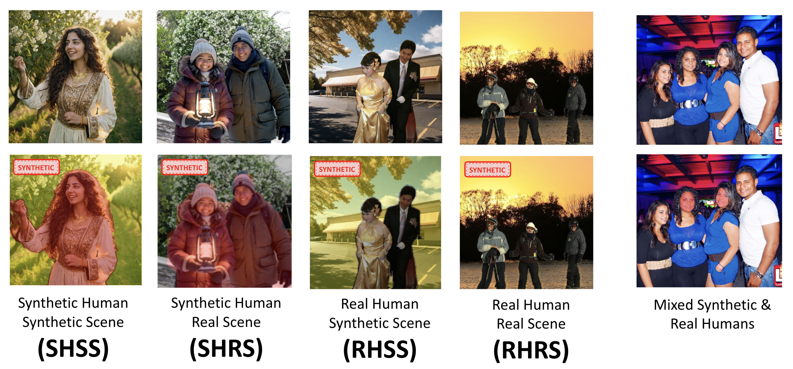
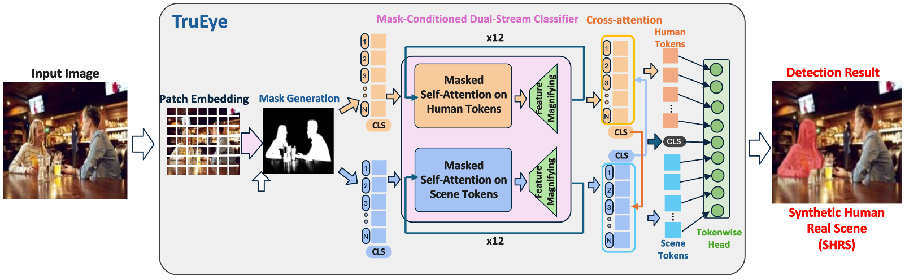
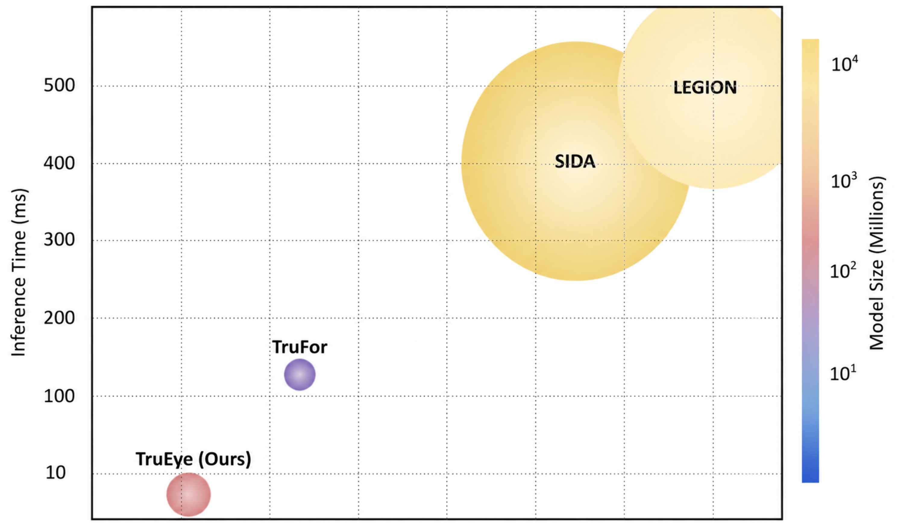

TruEye：面向人像与场景组合的细粒度 AI 图像检测
一句话总结
TruEye 将人像与背景场景拆成两个语义流，用 mask 条件化的双流 Transformer、特征放大模块和轻量级跨流注意力，同时输出局部伪造区域与全局组合类别；它的核心贡献不是再做一个二分类 deepfake detector，而是把“哪里假、假在人还是假在背景、真实人是否被放进了不属于他的真实场景”建模成同一个细粒度判别问题（见 PAGE 2-4、PAGE 6-10）。
1. 论文定位与问题定义
这篇论文的目标是检测 AI 生成或 AI 操纵的人类主体与场景。论文开篇将应用背景放在社交媒体诈骗、身份冒用和内容审核上，并明确提出检测器需要同时满足三个条件：跨生成器泛化、平台级推理效率、以及可以让审核者理解的解释性输出。作者在 PAGE 1-2 将这三项写成 “generalization”、“inference efficiency” 和 “interpretability”，这也是全文方法设计的约束。
传统检测器多把任务处理成二分类：一张图是真实还是合成。论文认为这种输出粒度不足，原因有两个。第一，二分类标签不能说明伪造发生在人身上、场景中，还是二者的组合关系中。第二，许多检测器依赖全局纹理或生成器统计痕迹，一旦生成器变化、压缩扰动或真实/合成区域占比很小，泛化性能就会下降（见 PAGE 2、PAGE 4-6）。
TruEye 的任务定义更细：对输入图像输出六类标签，其中五类属于合成或操纵内容，另有一类是完全真实图像 R。五个合成类别是 SHSS、SHRS、RHSS、RHRS 和 SS：合成人在合成场景、合成人在真实场景、真实人在合成场景、真实人被集成进真实场景、以及纯合成场景。论文特别强调 RHRS 的安全意义：人和背景各自都是真实的，但共现关系是假的，例如将真实政治人物插入真实抗议现场（见 PAGE 2、PAGE 6）。
这里最关键的技术转向是：TruEye 不仅检测像素是否“像 AI 生成”，还检测主体与背景之间的组合一致性。也就是说，模型既要做局部真伪判断，也要做跨区域语义关系判断。论文称其设计哲学是 “divide and conquer”，即把复杂检测任务拆成人体区域分析、场景区域分析、以及人-景一致性分析三个相互配合的子任务（见 PAGE 3）。

2. 研究背景：为什么二分类检测不够
早期 AI 图像检测依赖卷积网络或 Inception/Xception 风格模型，例如 XceptionNet 和 Adobe detector。它们可以学习某些 GAN 或 CNN 生成器留下的纹理、频域或卷积伪影，但论文指出这类方法对压缩、后处理和新型扩散/Transformer 生成器迁移较差（见 PAGE 4）。
后续方法引入 ViT、频域增强、混合 CNN-Transformer、多注意力区域建模等策略，以提升跨域泛化。论文在 PAGE 5 总结了 FatFormer、FakeFormer、FreqFaceNet、HTN、MADF 等路线。这些方法的问题不是完全无效，而是训练目标往往仍然服务于“真实 vs 合成”的二分类边界；当所有操纵模式被压缩到同一个 synthetic 表征中，模型很难区分“人假、景真”和“人真、景假”。
另一路相关工作关注定位，例如 ManTra-Net、Face X-ray、MVSS-Net、TruFor、SIDA 和 LEGION。定位方法能指出可疑区域，但论文认为它们仍未显式建模本文需要的语义组合类别，尤其是 RHRS 这种“像素本身不一定合成，但组合关系不真实”的案例（见 PAGE 5-6）。SIDA 和 LEGION 使用多模态或 LLM 解释，提升了可解释性，但代价是更高推理延迟和更大模型规模（见 PAGE 2、PAGE 11、PAGE 14）。
因此，TruEye 的出发点不是单纯追求更强 backbone，而是改变信息组织方式：先用 mask 区分 human tokens 与 scene tokens，再让每个流只在语义一致区域内推理，最后用跨流注意力判断主体与背景是否互相匹配。这使局部定位、类别解释和全局组合判断在同一架构内完成，而不需要外接 LLM（见 PAGE 3、PAGE 6-8）。
3. 预备知识：token、mask 与组合一致性
论文基于 Vision Transformer 的 patch token 表示。输入图像被切分为非重叠 $P \times P$ patch，每个 patch 经卷积式 patch embedding 投影到 $D$ 维空间；实验中 patch 大小为 16×16，得到 $N=196$ 个 patch tokens，并在序列前加入一个可学习的全局分类 token $[CLS]$（见 PAGE 6）。
mask 的语义不是传统图像分割的最终输出，而是模型内部的路由条件。论文定义：若某个 patch 超过 50% 属于人体相关内容，则 mask $m=1$；否则 $m=0$，表示以场景为主（见 PAGE 6-7）。这个 mask 决定后续双流 Transformer 中哪些 token 在 human stream 内被更新，哪些 token 在 scene stream 内被更新。
组合一致性是理解 RHRS 的必要概念。RHRS 中所有局部 patch 都可能是真实像素，因此仅靠 patch-level synthetic probability 可能将其误判为真实。TruEye 用 human stream 的 $[CLS]$ 与 scene stream 的 tokens 做跨注意力，反过来 scene stream 的 $[CLS]$ 也关注 human tokens，用全局关系来区分“真实人真实景真实共现”和“真实人真实景虚假拼接”（见 PAGE 8-9）。
4. 方法详解
TruEye 的结构由四个主要组件组成：mask generator、dual-stream classifiers、feature magnifier 和 global cross-attention layer。论文 Figure 2 给出了整体架构，Section 3.1 给出输入、mask、双流、FMM、跨注意力、最终输出与推理规则，Section 3.2 给出两阶段训练目标（见 PAGE 6-10）。

flowchart LR
X[Input image] --> P[Patch embedding]
P --> M[Mask generator]
M --> H[Human stream]
M --> S[Scene stream]
H --> FH[FMM per layer]
S --> FS[FMM per layer]
FH --> CA[CLS cross attention]
FS --> CA
CA --> T[Patch logits]
CA --> G[Global class]
T --> L[Localization map]
G --> C[SHSS SHRS RHSS RHRS SS R]
4.1 输入嵌入：保持空间对应关系
输入图像 $x \in \mathbb{R}^{3 \times H \times W}$ 先被切成 patch，再投影为 token。论文给出的输入序列公式是：
其中 $c \in \mathbb{R}^{D}$ 是 $[CLS]$ token，$t \in \mathbb{R}^{N \times D}$ 是 $N$ 个 patch embeddings，$p \in \mathbb{R}^{(N+1)\times D}$ 是位置编码。人话解释：模型不是直接看整张图，而是看带有位置记忆的一串图像块；$[CLS]$ 用于聚合整图级判断（见 PAGE 6）。
这一设计服务于后续定位。因为每个 patch token 保留了与原图 patch 的对应关系，最终 token-level authenticity logits 可以自然还原成区域级可疑图，而不是依赖外部解释模型补写说明（见 PAGE 8-9）。
4.2 Mask generator：把问题拆成人和场景
mask generator 被实现为一个 Transformer layer，用来预测每个 patch 属于人体区域还是场景区域。论文明确说明它有两个目的：第一，将人工伪影检测拆成较小子任务，让双流分类器专注于 human 或 scene；第二，允许模型处理任意人景比例，同时保持 token 结构不变（见 PAGE 7）。
这一步与普通 foreground segmentation 的区别在于，mask 在 TruEye 中是条件化机制而非最终任务。它不直接回答真假，而是规定后续 self-attention 可以在哪里发生。这样的选择使模型能够把人体伪影和场景伪影分开学习，减少不同语义区域之间的特征干扰。
4.3 双流 Transformer：在语义一致区域内推理
mask 之后，图像 token 同时进入 human stream 与 scene stream。每个 stream 含 12 个堆叠层，每层由 Transformer block 与 Feature Magnification Module 组成。为了兼容预训练 ViT 权重，论文没有删除互补区域的 tokens，而是让两个流都保留完整 token 集；区域特异性通过 attention masking 与 region-gated residual 来控制（见 PAGE 7）。
具体地说，human stream 中只有 human-region tokens 是 active，scene stream 中只有 scene-region tokens 是 active。论文称 attention logits 在 softmax 之前会加入 masking matrix $M$，从而只允许 active tokens 之间相互注意；涉及 inactive tokens 的交互被抑制。残差更新也只施加在 active tokens 上，inactive tokens 直接旁路保持不变（见 PAGE 7）。
这解释了 TruEye 与“ViT + 多头分类器”的关键差异。后者在同一表征空间中同时编码人体结构、衣着纹理、背景几何、光照一致性和拼接边界，细粒度类别可能互相冲突；TruEye 则把 human-specific artifacts 与 scene-level inconsistencies 分开提取，再在跨流阶段比较二者是否一致。
4.4 FMM：放大细微伪影，而不是只依赖全局纹理
Feature Magnification Module 位于每个 Transformer block 之后，是一个两层全连接瓶颈。论文给出的结构是从 768 维压缩到 48 维，再扩回 768 维，并生成通道级 excitation factors，范围被限制在 $[0.5,1.5]$（见 PAGE 7-8）。
其中 $g(x)$ 是两层瓶颈输出，$\sigma(\cdot)$ 是 sigmoid 函数，$\odot$ 表示通道级乘法。人话解释：FMM 给每个通道分配一个缩放因子，重要特征被放大，不重要特征被压低；这样能提升模型对局部细微不一致的敏感性（见 PAGE 8）。
FMM 的作用在消融中得到验证。删除 FMM 后，整体指标下降 10.07 个 accuracy 点和 7.22 个 F1 点；对 SHSS、RHRS 等类别也有明显损失（见 PAGE 15）。这支持论文的判断：单靠标准 Transformer 特征传播，细粒度伪影可能在全局聚合中被弱化。
4.5 双向跨注意力：为 RHRS 建模全局组合关系
在 12 层 Transformer + FMM 之后，TruEye 在两个流的 $[CLS]$ tokens 之间引入跨注意力。论文写道，human stream 的 $[CLS]$ token 会关注 scene stream 的全部图像 tokens，scene stream 的 $[CLS]$ token 也会关注 human stream 的全部图像 tokens（见 PAGE 8）。公式如下：
其中 $h_0$ 和 $s_0$ 分别是 human stream 与 scene stream 的 $[CLS]$ token，$\phi$ 是 masked cross-attention operator。人话解释：局部人像和局部背景先各自判断，再通过全局 token 询问对方区域是否语义上匹配；这一步专门弥补 patch-level 判断无法区分 RHRS 与完全真实图像的问题（见 PAGE 8）。
消融结果也支持这个设计。移除 cross-attention 后，RHRS 类别 accuracy 下降 19.59 点，F1 下降 11.29 点，是三个消融项中 RHRS 受损最明显的一项（见 PAGE 15）。这说明 RHRS 的难点确实主要来自跨区域关系，而不是单个 patch 的真伪纹理。
4.6 最终输出：同时给出局部定位与全局类别
跨注意力之后，两个更新后的 $[CLS]$ tokens 被融合为一个 global token。模型保留 human stream 的 human tokens 与 scene stream 的 scene tokens，总计 197 个 tokens：1 个 global token 加 196 个 patch tokens。共享线性层作用于每个 token，输出 authenticity logit，并通过 sigmoid 转成概率；概率越接近 1 越倾向 synthetic，越接近 0 越倾向 real（见 PAGE 8）。
推理时，阈值固定为 0.5。只要至少一个 human token 被判为 synthetic，图像包含 Synthetic Human；只要至少一个 scene token 被判为 synthetic，图像包含 Synthetic Scene。$[CLS]$ token 用于区分 RHRS 与 fully real image。最终 localization 来自 patch-level prediction results（见 PAGE 8-9）。
4.7 两阶段训练：先学 mask，再联合优化
训练分为两阶段。论文说明模型用预训练 ViT 初始化，初始学习率为 $3 \times 10^{-4}$，优化器为 AdamW，batch size 为 32，训练 138 epochs，并使用 early stopping 防止过拟合（见 PAGE 9）。
公式 (4) 是 Stage I 的 mask pretraining loss。$m_i$ 是第 $i$ 个 patch 的 mask logit，$y_i^{(\mathrm{msk})}$ 是二值 mask 标签。人话解释：模型先单独学会“哪里是人、哪里是场景”，避免全局真假目标在训练早期压过区域分解能力（见 PAGE 9）。
公式 (5) 是 Stage II 的总目标，由 mask loss、token-level loss 和 global classification loss 构成。人话解释：TruEye 同时约束区域划分、局部真伪和整图组合类别；$\lambda_{\mathrm{cls}}=0.6$ 控制全局监督权重（见 PAGE 9）。
公式 (6) 是 token-level loss。$z_i$ 是第 $i$ 个 token 的 authenticity logit，$y_i^{(\mathrm{tok})}$ 是 token 真伪标签。论文设 $\epsilon=0.02$ 作为 label smoothing，以降低过度自信并提升泛化（见 PAGE 9）。
公式 (7) 是动态正样本权重。$N_{\mathrm{pos}}$ 与 $N_{\mathrm{neg}}$ 分别表示 batch 中 synthetic 与 real tokens 数量。人话解释：当合成 token 很少时，上调其损失权重，避免模型靠预测多数类 real 获得低损失；clip 则限制权重过大造成训练不稳定（见 PAGE 9）。
公式 (8) 是 global token loss。$z_0$ 是融合后的 $[CLS]$ logit，$y_{\mathrm{cls}}$ 表示整图是否 synthetic。人话解释：这项监督让 $[CLS]$ 学到跨区域高层一致性，补足 patch-level 梯度不能完全覆盖的组合关系（见 PAGE 10）。
4.8 FineSyn：为细粒度组合任务构造训练集
论文提出 FineSyn 数据集，用来覆盖真实/合成人与真实/合成场景的组合。每种 synthetic composition type 生成 5,000 张图像，并收集 10,000 张真实人类中心图像，总计 35,000 张；训练/评估采用 80-20 split（见 PAGE 10）。
FineSyn 的构建流程包括 diffusion 和 GAN 生成、分割、手动组合与 harmonization。扩散模型使用 Stable Diffusion，并控制 location type、lighting、camera viewpoint、weather、age、clothing、pose、ethnicity 等 prompt 维度；GAN 侧包括 GauGAN、StarGAN、CycleGAN、BigGAN、StyleGAN、ProGAN、StyleGAN2 等；真实人和背景来自 COCO、ImageNet、FFHQ、CelebA-HQ 和 Human Pose datasets（见 PAGE 10）。
这套数据构建方式的优点是能系统覆盖组合类别，尤其是 RHRS；风险是其分布仍由人工生成流程和 harmonizer 决定。若线上诈骗图像经过更多压缩、裁剪、滤镜、重采样、截图转发或平台水印处理，FineSyn 的训练分布是否覆盖足够，需要额外验证。
5. 代码与可复现性
代码状态：本文未提供可确认的公开代码。给定元信息中 code_url 与 project_url 为空，论文全文 PAGE 1-18 未出现可验证 GitHub 或项目主页。因此，本文不能给出源码路径、函数名或论文方法与源码实现的逐行对应关系。
可复现性方面，论文给出了较多训练与实验设置：预训练 ViT 初始化、AdamW、学习率 $3\times10^{-4}$、batch size 32、138 epochs、early stopping、单 RTX 4090 工作站、1,000 张图像测平均推理时间等（见 PAGE 9、PAGE 11、PAGE 14）。但缺少公开代码会限制第三方复核 attention mask、region-gated residual、FMM 具体实现和数据生成细节。
数据层面，作者声称 FineSyn 会被 curate and release，并称其用于支持后续细粒度 synthetic-image analysis 研究（见 PAGE 4、PAGE 10）。但在给定材料中没有看到下载链接或许可信息，因此 FineSyn 的实际可获得性仍是证据不足。
6. 实验分析
实验使用 Intel Core i9-14900KF CPU、62 GB RAM 与单张 NVIDIA GeForce RTX 4090 GPU。对比模型包括 TruFor、SIDA、LEGION，并在若干实验中涉及纯 ViT baseline。论文称使用各模型 originally published parameters，以减少重新训练造成的偏差；TruEye 只在 FineSyn 上训练（见 PAGE 11）。
| 模型 | 基础架构 | 参数量 | 模型大小 | 证据 |
|---|---|---|---|---|
| TruFor | MiT-B2 + DnCNN | 68.7M | 255.9 MB | Table 1, PAGE 11 |
| LEGION | LLM + ViT + SAM | 8B | 29.8 GB | Table 1, PAGE 11 |
| SIDA | LLM | 13B | 28.8 GB | Table 1, PAGE 11 |
| TruEye | ViT | 263M | 1 GB | Table 1, PAGE 11 |
从模型规模看，TruEye 并不是最小模型；它比 TruFor 大。但它远小于 LLM 系统 SIDA 和 LEGION，也避免了 LLM 推理链路。这一点与论文“在解释性接近 LLM 方法的同时降低成本”的论点一致（见 PAGE 2-4、PAGE 11、PAGE 14）。
| 数据集 | 年份 | 合成图像数 | 真实图像数 | 训练该数据集的模型 | 证据 |
|---|---|---|---|---|---|
| FaceForensics++ | 2019 | 10,000 | 1,363 | XceptionNet | Table 2, PAGE 12 |
| OpenForensics | 2021 | 95,134 | 95,201 | None | Table 2, PAGE 12 |
| SID-set | 2025 | 200,000 | 100,000 | SIDA | Table 2, PAGE 12 |
| OpenSDID | 2025 | 150,000 | 150,000 | MaskCLIP | Table 2, PAGE 12 |
| SynthScars | 2025 | 12,236 | 0 | LEGION | Table 2, PAGE 12 |
| FineSyn | 2026 | 25,000 | 10,000 | TruEye | Table 2, PAGE 12 |
6.1 FineSyn 上的细粒度检测
论文首先在 FineSyn 上比较 TruEye 与纯 ViT。正文称 TruEye 达到 overall accuracy 95.52% 与 F1-score 97.08%，纯 ViT 只有 60.11% accuracy 与 53.31% F1-score；但 Table 3 的表头是 IoU/F1，并列出 TruEye overall IoU 93.70%、F1 96.73%，Pure ViT overall IoU 69.29%、F1 73.61%（见 PAGE 12）。这里正文指标与表格指标存在口径不一致，解读时应以各自上下文为准。
| 模型 | SHSS F1 | SHRS F1 | SS F1 | RHSS F1 | RHRS F1 | Real F1 | Overall F1 | 证据 |
|---|---|---|---|---|---|---|---|---|
| TruEye | 94.93 | 94.70 | 96.40 | 97.09 | 98.54 | 98.70 | 96.73 | Table 3, PAGE 12 |
| Pure ViT | 85.22 | 27.96 | 86.19 | 83.17 | 81.50 | 77.60 | 73.61 | Table 3, PAGE 12 |
最有解释力的不是 overall F1，而是 SHRS 与 RHRS 的差距。Pure ViT 在 SHRS 上 F1 只有 27.96%，说明“合成人 + 真实场景”这种组合不能靠普通全局 ViT 分类头稳定分离；TruEye 在同类上达到 94.70%。RHRS 上，TruEye F1 为 98.54%，也支持跨流一致性建模对“真实人被放进真实场景”的价值（见 PAGE 12）。
6.2 跨数据集泛化
Table 4 汇报六个数据集上的 generalization performance，表头为 AUC 与 IoU。正文一处写“report AUC and F1-score”，但表格列名是 AUC/IoU；以下按表头 AUC/IoU 解读（见 PAGE 13）。
| 方法 | SID-set AUC/IoU | SynthScars IoU | FineSyn AUC/IoU | FF++ AUC/IoU | OpenForensics AUC/IoU | OpenSDID AUC/IoU | 证据 |
|---|---|---|---|---|---|---|---|
| TruFor | 74.08 / 35.00 | 3.65 | 78.78 / 33.60 | 62.93 / 54.79 | 80.49 / 71.39 | 55.08 / 33.91 | Table 4, PAGE 13 |
| SIDA | 87.30 / 73.90 | 60.40 | 54.92 / 48.28 | 72.36 / 48.39 | 58.88 / 60.25 | 58.88 / 8.25 | Table 4, PAGE 13 |
| LEGION | 71.74 / 35.36 | 55.91 | 47.43 / 33.81 | 77.88 / 50.30 | 8.32 / 4.26 | 64.57 / 41.17 | Table 4, PAGE 13 |
| TruEye | 96.50 / 79.82 | 61.58 | 98.32 / 93.70 | 89.23 / 82.96 | 93.20 / 83.46 | 91.85 / 79.82 | Table 4, PAGE 13 |
Table 4 的核心结论是：TruEye 在所有列中均为最强或并列最强。尤其 OpenForensics、FaceForensics++ 和 OpenSDID 被论文描述为未被任何被评估模型用于训练的数据集，因此更接近 out-of-distribution 泛化测试。TruEye 在 OpenForensics 上达到 93.20 AUC / 83.46 IoU，在 OpenSDID 上达到 91.85 AUC / 79.82 IoU，明显高于 SIDA 和 LEGION（见 PAGE 13）。
不过，论文在贡献段写 evaluations span eight datasets（PAGE 4），而实验表格实际列出六个数据集（PAGE 12-13）。这可能来自版本编辑或统计口径差异。严格阅读时，应以当前全文中的 Table 2 与 Table 4 为直接证据，即六个列出的数据集。
6.3 推理速度与部署价值

速度实验对业务场景有直接意义。TruEye 的 4.57 ms/image 与 SIDA 的 460 ms/image、LEGION 的 540 ms/image 相比，大约快两个数量级。论文多次将这一点概括为 over 100× faster（见 PAGE 1、PAGE 3、PAGE 4、PAGE 14）。
这种速度优势来自两个方面。第一，TruEye 不调用 LLM，也不生成语言解释；解释性来自类别标签和 patch-level localization。第二，人和场景分别在各自语义 token 内做 intra-stream attention，只有全局 $[CLS]$ 做轻量跨流聚合，避免所有 patch 之间全量混合（见 PAGE 3、PAGE 7-8）。
6.4 鲁棒性扰动
Table 5 使用四类强扰动测试鲁棒性：JPEG 压缩 QF=10、高斯模糊 $\sigma=4$、下采样到 0.3× 分辨率，以及加性高斯噪声 $\sigma=0.1$。论文从评估数据集中随机抽取 2,000 张图像，包含 1,000 张真实和 1,000 张合成，并排除 FineSyn 以保证 out-of-distribution 测试（见 PAGE 14）。
| 扰动 | TruEye IoU/F1 | SIDA IoU/F1 | LEGION IoU/F1 | TruFor IoU/F1 | 证据 |
|---|---|---|---|---|---|
| JPEG QF=10 | 89.97 / 91.05 | 57.96 / 61.64 | 31.96 / 35.71 | 32.86 / 34.89 | Table 5, PAGE 14 |
| Resize 0.3× | 84.49 / 85.91 | 66.50 / 68.66 | 31.28 / 35.15 | 33.67 / 34.22 | Table 5, PAGE 14 |
| Blur σ=4 | 80.28 / 80.90 | 66.24 / 68.14 | 29.48 / 34.42 | 31.33 / 32.57 | Table 5, PAGE 14 |
| Noise σ=0.1 | 88.76 / 90.16 | 60.45 / 62.92 | 30.96 / 35.57 | 32.51 / 32.87 | Table 5, PAGE 14 |
这组结果说明 TruEye 的优势不是只在干净样本上成立。即使经过重压缩、下采样、模糊或噪声，TruEye 仍保持 80 以上 F1。相比之下，LEGION 和 TruFor 在这些扰动下 F1 多在 30-36 区间。对于社交平台上传图像，这类扰动更接近真实链路，因此 Table 5 是论文最有部署解释力的实验之一。
6.5 消融实验：哪些组件真正有用
消融实验比较 single stream、no FMM 和 no cross attention。由于双流分类器依赖 mask generator，论文没有单独移除 mask generator 后仍保留双流；相反，它比较了普通 ViT、带 mask generator 的 single-stream 变体、去掉 FMM 的变体、以及去掉 cross-attention 的变体（见 PAGE 14-15）。
| 变体 | Overall Acc 下降 | Overall F1 下降 | RHRS Acc/F1 下降 | 主要解释 | 证据 |
|---|---|---|---|---|---|
| Single Stream | -18.93 | -18.60 | -11.02 / -6.06 | 单流共享表征会混合人体与场景线索，降低细粒度判别 | Table 6, PAGE 15 |
| No FMM | -10.07 | -7.22 | -13.55 / -7.55 | 缺少通道放大后，细微伪影更容易被标准传播抑制 | Table 6, PAGE 15 |
| No Cross Attention | -9.68 | -6.86 | -19.59 / -11.29 | 跨区域组合关系被削弱，RHRS 受损最大 | Table 6, PAGE 15 |
消融结果与方法论高度一致。Single stream 的大幅下降证明“只加分类头”不足；No FMM 的下降证明细粒度线索需要显式放大；No Cross Attention 对 RHRS 的伤害最大，则说明 RHRS 不是普通局部伪影检测问题，而是人-景共现关系判断问题（见 PAGE 15）。
7. 讨论：适用边界与业务含义
TruEye 适用于人像与场景组合关系明确的图像审核任务，例如社交媒体头像/动态、交友诈骗素材筛查、人像广告素材清洗、合成图像自动标注质检，以及对“真实人物被放入虚假上下文”的风险检测。论文的类别体系天然贴近这类业务，因为它不仅输出 synthetic/real，还能指出合成成分位于 human、scene 或两者关系中（见 PAGE 2、PAGE 6、PAGE 8-10）。
它不适合被直接理解为通用图像取证系统。论文标题和数据集都以 human subjects 与 human-centric imagery 为中心，FineSyn 也围绕人和场景组合构建（见 PAGE 1、PAGE 10）。对纯物体、文档、医学图像、卫星图像、商品图或无人物场景，证据不足，不能从本文结果直接推出同等有效。
方法论上，TruEye 的启示是：当检测对象具有明确语义组成时，先按语义区域建立专门表示，再做跨区域一致性判断，可能比把所有伪造模式压进单一 embedding 更稳健。这一思想也可迁移到其他组合检测任务，例如“车辆-道路”“商品-背景”“文字-海报布局”等，但需要重新定义 mask、token supervision 与类别体系。
8. 局限分析
作者自述或材料中可确认的边界：论文没有单列 Limitations 章节，也没有明确的“作者自述局限”段落；因此若要求正式 limitation quote，证据不足。但作者在实验协议中说明 TruEye 只在 FineSyn 上训练，鲁棒性测试排除了 FineSyn，并使用各基线 originally published parameters（见 PAGE 11、PAGE 14）。这说明论文关注的是跨数据集泛化，而不是在所有数据集上统一重训后的最优比较。
数据生成局限：FineSyn 由 diffusion、GAN、分割、手动组合与 harmonizer 构成（见 PAGE 10）。这能覆盖论文定义的组合类别，却可能引入数据集特定痕迹，例如 harmonization 风格、prompt 分布、人物姿态分布或拼接边界模式。若模型学到的是 FineSyn 生成流程的隐性偏差，而非一般性人-景一致性，线上泛化会受影响。Table 4 和 Table 5 提供了缓解证据，但仍需要更多真实平台数据验证。
代码与数据可复核局限：本文未提供可确认公开代码，FineSyn 也未在给定材料中提供下载链接或许可信息。缺少代码会影响对 attention masking、region-gated residual、FMM scale 约束、训练细节和推理阈值实现的复核；缺少数据链接则影响第三方重复 Table 3-6 的结果。
指标与文本一致性问题：论文中存在若干口径不完全一致之处。PAGE 4 写 evaluations span eight datasets，但 PAGE 12-13 的 Table 2 与 Table 4 展示六个数据集；PAGE 13 正文说 Table 4 报告 AUC 与 F1-score，但表头是 AUC 与 IoU；PAGE 12 正文的 overall accuracy/F1 与 Table 3 的 overall IoU/F1 也不是同一组数字。这些不必然推翻结论，但会增加读者复现和引用时的核对成本。
误伤率与部署阈值仍未充分展开：论文使用 0.5 阈值进行推理，并报告 AUC、IoU、F1、速度和鲁棒性（见 PAGE 8-14）。但对内容审核系统而言，关键还包括不同场景下的 false positive rate、人工复核量、不同肤色/年龄/场景类型上的公平性、截图链路与平台压缩下的稳定阈值。这些在给定全文中证据不足。
9. 结论
TruEye 的贡献可以概括为三点。第一，它把 AI 生成人像检测从二分类推进到人-景组合层面的细粒度类别，并显式覆盖 RHRS 这种真实人、真实场景但共现关系虚假的安全敏感类别。第二，它提出 mask-conditioned dual-stream Transformer：人和场景分别在语义一致 token 内推理，FMM 放大局部细微信号，跨流 $[CLS]$ attention 建模全局组合一致性。第三，它在 FineSyn、跨数据集泛化、扰动鲁棒性和推理速度上都给出强结果，尤其相对 LLM 检测器取得约百倍速度优势（见 PAGE 2-15）。
从研究角度看，本文最值得保留的不是某个单点模块，而是任务重构：对“伪造”进行成分化、区域化和组合化建模。对于人像审核和生成素材治理，这比单一 real/fake 标签更可执行；对于后续研究，关键问题则是公开实现、公开数据、真实平台分布验证，以及更严格的误伤率与公平性评估。
证据索引
| PAGE | 关键证据 |
|---|---|
| PAGE 1 | 论文标题、作者、摘要；提出 TruEye、五类合成内容、mask-conditioned dual-stream transformer、token-level supervision、over 100× faster、实验覆盖多个数据集。 |
| PAGE 2 | 三项需求：generalization、inference efficiency、interpretability；五个合成类别 SHSS/SHRS/RHSS/RHRS/SS；RHRS 的安全例子；解释性输出不依赖 LLM。 |
| PAGE 3 | Figure 1；divide and conquer 设计；dual-stream、FMM、region-gated cross-attention、token-level supervision 和 global classification 的方法概述；速度设计动机。 |
| PAGE 4 | 论文贡献列表；声称 FineSyn 数据集；与 SIDA、LEGION 等代表性检测器比较；此处出现 eight datasets 表述。 |
| PAGE 4-6 | 相关工作：XceptionNet、Adobe detector、ViT/频域/多注意力方法、定位方法、SIDA、LEGION；说明现有方法未显式处理本文细粒度组合类别。 |
| PAGE 6 | TruEye 架构总览；输入图像 $x\in\mathbb{R}^{3\times H\times W}$；六类输出；patch embedding；$N=196$；公式 (1)。 |
| PAGE 7 | Figure 2；mask generator 定义；双流 classifier；12 层 Transformer + FMM；attention masking matrix $M$；region-gated residual。 |
| PAGE 8 | FMM 768→48→768、excitation factors $[0.5,1.5]$；公式 (2)；双向 $[CLS]$ cross-attention；公式 (3)；最终 197 tokens 输出。 |
| PAGE 9 | 推理规则：0.5 阈值、human token 与 scene token 判定、$[CLS]$ 区分 RHRS 与真实；两阶段训练设置；公式 (4)-(7)。 |
| PAGE 10 | 公式 (8)；FineSyn 构建、35,000 张图像、80-20 split、Stable Diffusion/GAN/真实数据源、segmentation/composition/harmonization 流程。 |
| PAGE 11 | 实验硬件；Table 1 模型架构、参数量与模型大小；对比 SIDA、LEGION、TruFor；说明 TruEye 仅在 FineSyn 上训练。 |
| PAGE 12 | Table 2 数据集统计；Table 3 TruEye 与 Pure ViT 在 FineSyn 上的细粒度性能；正文给出 overall accuracy/F1，表格给出 IoU/F1。 |
| PAGE 13 | Table 4 跨数据集 AUC/IoU；Figure 3 推理速度图；正文解释 TruEye 在多个数据集上泛化更强。 |
| PAGE 14 | 推理速度数值：TruEye 4.57 ms/image，SIDA 460 ms/image，LEGION 540 ms/image；Table 5 扰动鲁棒性；消融实验设计说明。 |
| PAGE 15 | Table 6 消融结果；single-stream、no FMM、no cross attention 对整体性能与 RHRS 的影响；结论段开始。 |
| PAGE 16-18 | 结论与参考文献；未见公开代码链接或项目主页。 |